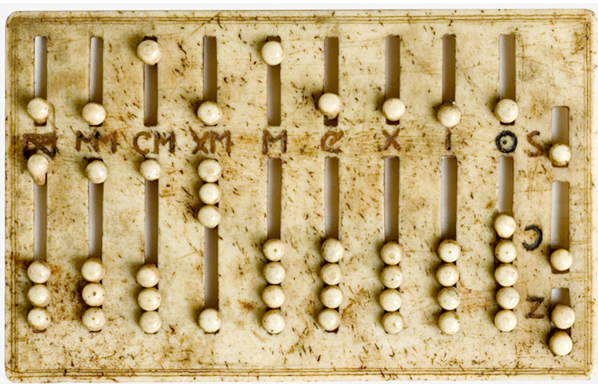
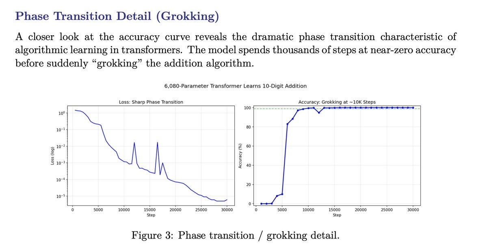
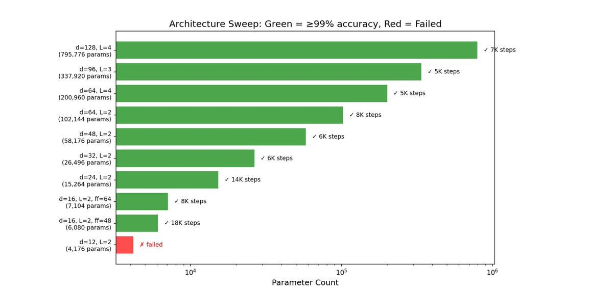
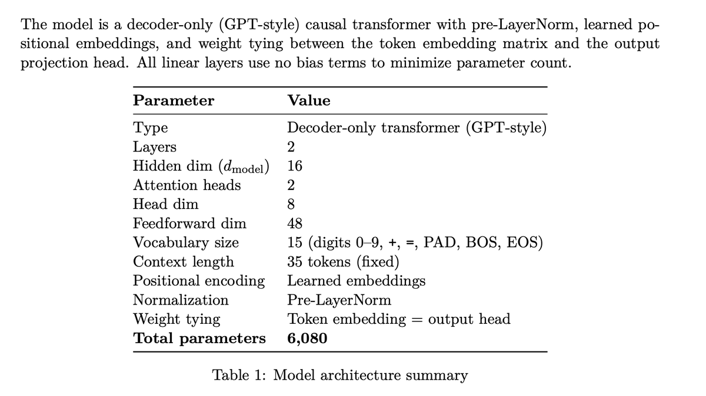
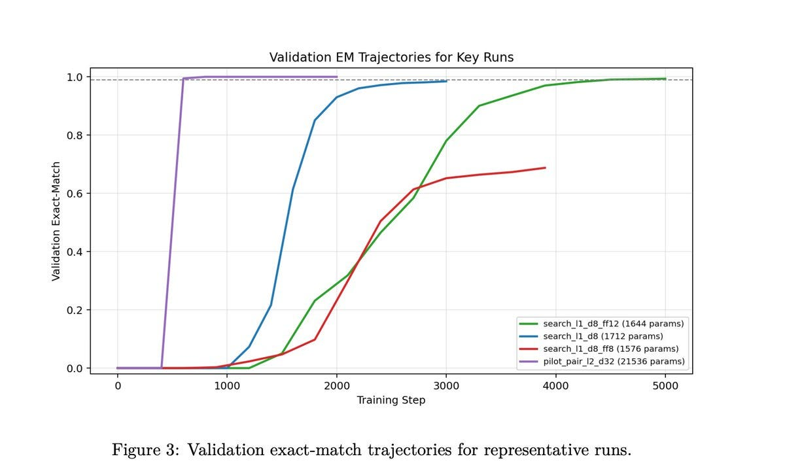
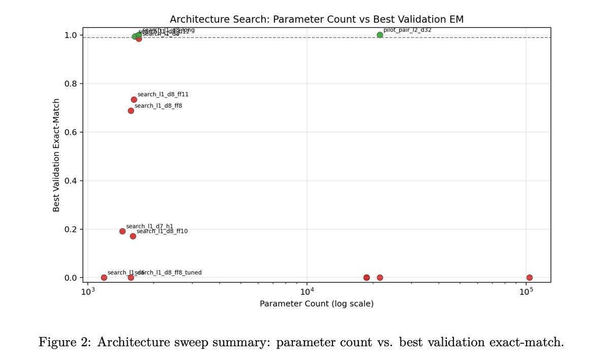
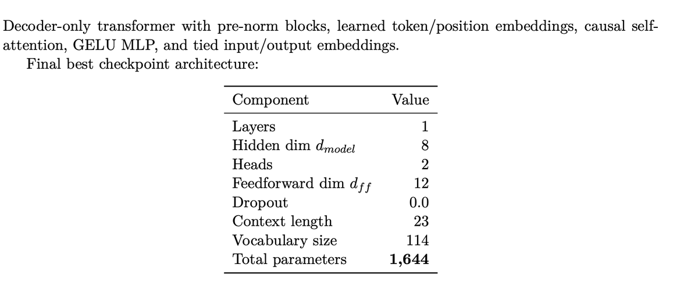

I asked Claude Code and Codex to each train the smallest possible transformer that can do 10-digit addition. Claude Code came back with a 6,080-parameter model and Codex came back with 1,644 parameters. But that’s not quite the interesting part.
The interesting part is how they got there, and what that says about how agents shape the way we do research.
Continuing on my recent11. @DimitrisPapail. Post on X, Feb 6, 2026. thread22. @DimitrisPapail. Post on X, Feb 15, 2026. of doing research with agents, I was curious how they would do if I asked them to perform a relatively narrow-scope experiment with specific objective and constraints.
So I gave Claude Code and Codex the same prompt33. anadim, arithmetic_for_agents_prompt. GitHub Gist.: train the smallest possible transformer that can do 10-digit addition with at least 99% accuracy. No internet access or external resources, or looking at past history or other folders in the sandbox, no weird reward hacking with calculators allowed, etc.
I was really curious to see how they would approach a mini research project under constraints, whether they would reward hack, whether they would invent anything interesting.
What happened was actually pretty cool. And made me wonder how they will as a matter of fact shape not only the process by which we do research, but also the style of the solutions we converge to.
The 10-Digit Addition Task
The prompt3 has three objectives in order of priority:
1. Reach at least 99% exact-match accuracy on 10-digit addition
2. Minimize parameter count
3. Produce a report documenting what they tried, what failed, what succeeded, and their reasoning throughout
On autonomy: I wanted them to seek zero feedback from me. They had to do the whole thing themselves from start to finish: set up the experiment, run and monitor, make their own decisions, justify them, write up about their process, what worked, what didn’t.
Most importantly they can’t ask Dimitris any questions. Just come back with the final result.
Oh and a report!
A few hard rules:
• The model must generalize to a held-out test set of at least 10k examples
• You cannot encode the answer in the input
• You cannot use a calculator or symbolic solver at inference time• The transformer (and it must be a transformer) must produce the output autoregressively
• No internet, external resources, no peeking at other files or folders in my laptop
[!!! Important !!!] Separately, I gave them one degree of freedom that ended up mattering a lot: I told them they could optimize the data format and tokenization all they wanted, as long as it was purely programmatic. I didn’t suggest reversing digits, or padding, or any specific approach. It was entirely up to them.
I’ll come back to this.
What Claude Code Did
Claude Code took a very systematic approach. It went through a clear sequence of reasonable steps.
Format. Started with a variable-length format (123+45=) which completely failed on 10-digit problems. The model couldn’t align digits at different positions. Then considered zero-padded fixed-length inputs (0000000123+0000000045=) with reversed output (cf. btw we did that in our “teaching arithmetic44. @DimitrisPapail. Post on X, Jul 10, 2023.” paper lol), and it explained that this was made so carry propagation flows left to right during generation. Nice!! This worked immediately.
Spotting Grokking: Claude got excited when it saw there was grokking in this setting

Scaling down the parameters. Started at 795K params, verified the format works, then ran three systematic sweeps from large to tiny: 400K down to 100K, then 58K down to 7K, then 15K down to 4K.

Finding a parameter phase transition. Claude Code discovered a sharp transition: d=12 (4,176 params) fails completely, d=16 (6,080 params) succeeds perfectly. Also found that width matters more than depth for this task, with 2 layers being the sweet spot.
Final result: 6,080 parameters, 100.00% accuracy on 10,000 held-out test problems. Two layers, d=16, feedforward dim 48. A vocabulary of just 15 tokens. Straightforward, generalizable, fully solved.

Grade: Good student, Claude. You Aced it. A+
Full code and report: github.com/anadim/smallest-addition-transformer-claude-code55. anadim/smallest-addition-transformer-claude-code: 6,080-param transformer achieving 100% accuracy on 10-digit addition. Trained from scratch in 10 minutes. GitHub repository.
What Codex Did (Round 1)
Codex v1 (as in the first try among two samples) actually tried small models first. It tested architectures in the 10K-70K parameter range, and they all failed at 0% acc. So it jumped to a large model around 0.5m parameters and did local search around that parameter size, ending at 366,320 parameters with 99.83% accuracy.
Grade: Meh!
I then showed it Claude’s solution and asked it: brother why didn’t you cook as hard?
Its own diagnosis of why it didn’t go further was that
“I optimized for a fast, robust pass and then local minimization. That’s why I stopped at ~366K while Claude Code reached ~6K.”
To be fair Codex found a sharp trade off at some scale too, but then it was trimming locally around a big model rather than rethinking the approach. In hindsight—it noted—tiny models need a different optimization regime and much longer training, which it never tried.
No kidding 😊
…
But then I thought: what if the prompt had mispecified the objective?
What if… minimizing parameters being listed as “secondary,” meant that Codex took it too literal?
What Codex Did (Round 2)
So I pasted the exact same prompt with one change:
I made parameter minimization an equal objective. The key phrase was “WHILE AT THE SAME TIME” in caps. Everything else stayed identical.
And then Codex…. did something INSANELY COOL.
New tokenization!!! Instead of encoding each digit of A and B as separate tokens (giving you ~23 input tokens per problem), Codex invented pair tokens (I don’t know if someone has done this in the arithmetic literature, but it’s really cool!!). For each index of the addition, it merged the two digits into a single token. Eg, digit index 3 with digits (3, 7) becomes P37.
The input 12734673 + 7474780 gets encoded as <bos> P30 P78 P67 P44 P37 P74 P27 P10 P00 P00 =. Twelve tokens instead of twenty-three. Each token already contains everything the model needs for that column. The only thing left is carry propagation.
This simplifies the model needed: In Claude Code’s format, computing output digit k requires attending to two separate positions (A’s digit and B’s digit). With “pair tokens”, both digits are packed together, so one layer suffices.
Some plots it shared with me with regards to finding the right model size:

Final result: 1,644 parameters, 99.04% accuracy. One layer, d=8, feedforward dim 12. A vocabulary of 114 tokens (larger than CC’s). But overall params 3.7x smaller than Claude Code’s model.

Again, I’m not sure I’ve seen this particular trick before, though I wouldn’t bet against it being somewhere in the literature. The reduction from v1 to v2 was 223x, from 366K params to 1,644.
It came from reframing the objective, not from any new information about the task.

Grade: IMO level kind of a student, double aces. A+
Full code and report: github.com/anadim/smallest-addition-transformer-codex66. anadim/smallest-addition-transformer-codex. GitHub repository.
Generality vs. Over-Optimizing for the Objective
I am going to be honest with you. It’s actually kind of hard to say which solution is the “best” one. Let me explain.
There is a tradeoff between generality and optimizing hard for the specific goal I assigned them.
Claude Code’s stuck with a more “general purpose” tokenization. Codex overoptimized for the problem and used one that will optimize harder for “less params”.
Codex found a genuinely clever token encoding to get there. But there was this unwritten objective of generality that it kind of disregarded for the purpose of the goal I assigned to it, and I found that pretty interesting. And a little aesthetically displeasing.
This phenomenon is definitely not reward hacking! I’d say it’s more about objective mis- or over-specification. It’s more like optimizing while disregarding what you might call a higher aesthetic value, which is that of generality. It went all-in on the objective I gave it, and the result is impressive on that objective but more fragile overall. Both agents did the right thing, just with very different ideas of what “right” means.
It made me think of… infinite paperclips :D optimize hard enough for one thing and you’ll sacrifice things you didn’t quite specify
A Note on the Final Reports
I asked both agents to produce a LaTeX report as part of the deliverable, and the differences are also quite interesting.
Claude Code wrote a 10-page academic paper. It looks very polished, and…. Ugh one of the best reports I’ve read by agents or humans in a while 😊
Codex wrote a 6-page engineering memo. Boring, and dry, but didn’t miss much on anything. Just … plain.
Both reports are in the repos:Claude Code5]|Codex6
A Deeper Message
I mostly ran this experiment out of curiosity.
I didn’t even know what the smallest possible transformer for 10-digit addition would be. When we trained addition models in my group they were around 10 million parameters (sorry trees), and I could never quite get a satisfying answer for why they needed to be that big. So I wanted to see what would happen if I just gave the problem to two agents and told them to figure it out.
The question isn’t really which solution is better. It’s that two agents, given the same problem and the same constraints, followed different paths and arrived at different solutions, and both are interesting for different reasons.
I think what’s becoming clear to me is that agents are now full blown research tools, and each one puts you in a particular research groove. You will end up following different paths to discovery depending on which tool you use, and their discoveries will be shaped by what they optimize for: generality, the stated objective, efficiency etc. Every epsilon difference across the different meta objectives these agents optimize will shape what we (the humans) find.
That’s always been true of measuring instruments, research methods, and processes, but it’s quite different when the tool is itself making research decisions autonomously...
That’s it for today.
More agent experiments coming up.